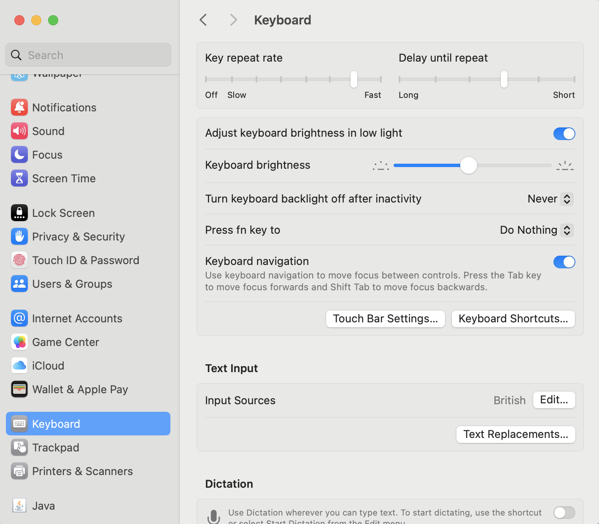

Chrome or Firefox should work with Voiceover, but the recommended browser for VoiceOver is Safari, so this might be best to use.
Unfortunately, Safari Macs do not come pre configured for using keyboard navigation so to allow that, change the settings below (or ask for help).
In Safari you will need to allow Tab to highlight each item on a webpage.
Go to Preferences, then Advanced, then hit the checkbox that says "Press Tab to highlight each item on a webpage"
In your System Preferences you will need to allow the keyboard full access to navigate by keyboard.
Go to System Preferences, then Keyboard and turn on "Keyboard navigation".
